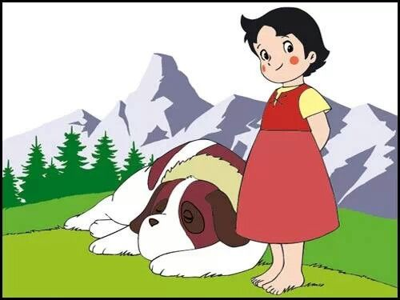
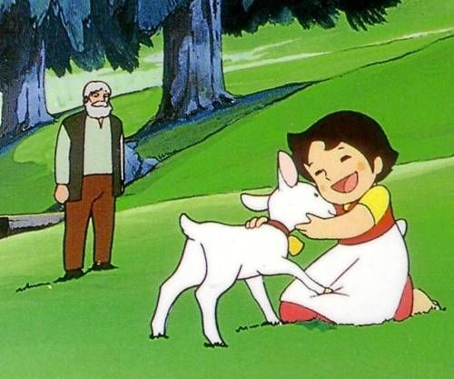
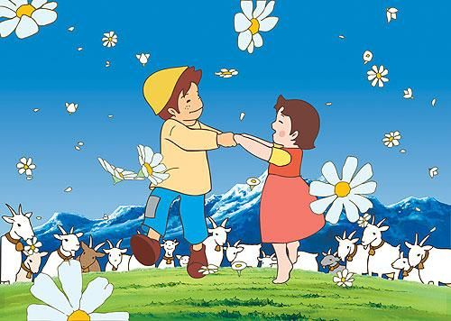

Heidi, una niña huérfana, es criada en las montañas de Suiza por su abuelo, y disfruta de la libertad mientras pastorea cabras con su amigo Pedro. Su vida transcurre feliz hasta que su tía la lleva a la ciudad alemana de Frankfurt para que cuide de una niña inválida, con quien forjará una hermosa amistad y vivirá muchas aventuras.
  Heidi, una niña de cinco años, huérfana de padre y madre, es llevada por su tía Dete a la montaña suiza de Alm a vivir con su abuelo, para tomar un trabajo en la ciudad de Fráncfort del Meno, en Alemania. Al principio, el «Viejo de los Alpes», como es conocido en las aldeas de la cercanía, no está muy contento de tener que cuidar a la niña.
Sin embargo, la inefable ternura y alegría de su nieta hace que él poco a poco vaya cambiando de carácter, no solo con ella sino con el resto de la gente. Heidi ha descubierto una encantadora vida en las montañas y no desea irse, hace amistad con un pastorcito vecino llamado Pedro y juntos toman agradables paseos en las montañas al pastorear a las cabras.
Heidi rápidamente se gana el cariño de todos, incluso de la abuela de Pedro, una anciana débil y ciega. Desgraciadamente, una gran tristeza los afecta a todos el día en que su tía Dete regresa para llevarse a Heidi con ella, ya que asegura tener una magnífica oportunidad para la manutención y educación de Heidi en Fráncfort, con tal de que le haga compañía a la hija del señor Sesemann.
En la ciudad, Heidi descubre que Klara Sesemann es una niña que no puede caminar y se mueve en silla de ruedas. Pronto se hacen amigas. También en este nuevo hogar Heidi tendrá que someterse a la estricta señorita Rottenmeier, la institutriz de Klara. Cuando por fin se reúne con su abuelo y sus amigos en las montañas de los Alpes, Heidi recibirá la visita de Klara y su abuela, y ocurrirá un milagro, que será una gran alegría para todos.